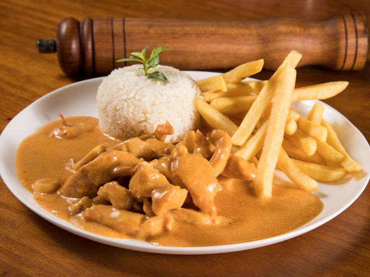

THE REAL brazilian strogonoff

Description
Brazilian Strogonoff, known locally as "Estrogonofe," is a beloved dish in Brazil, distinct from its Russian origins.
It features a creamy, tomato-based sauce and is commonly made with either beef or chicken. The dish is typically
served over white rice and often accompanied by french fries, adding a delightful crunch to the meal.
Ingredients
- 2 tablespoons butter
- 1 medium onion, finely chopped
- 2 cloves garlic, minced
- 1½ pounds (approximately 680 grams) skinless chicken breasts, cut into bite-sized pieces
- Salt and freshly ground black pepper to taste
- 1 cup tomato sauce
- 2 tablespoons ketchup
- 1 tablespoon Dijon mustard
- 1 cup heavy cream
- 1 cup sliced mushrooms (optional)
- Fresh parsley, chopped (for garnish)
Steps
- Sauté Aromatics: In a large skillet, melt the butter over medium heat. Add the chopped onion and cook until translucent. Add the minced garlic and sauté briefly until fragrant.
- Cook Chicken: Add the chicken pieces to the skillet. Season with salt and pepper. Cook until the chicken is browned on all sides and fully cooked through.
- Add Mushrooms: If using mushrooms, add them to the skillet and cook until they soften.
- Prepare Sauce: Stir in the tomato sauce, ketchup, and Dijon mustard. Mix well to combine. Let the mixture simmer gently for a few minutes to allow the flavors to meld.
- Incorporate Cream: Reduce the heat to low and stir in the heavy cream. Cook for a few more minutes until the sauce is heated through and reaches your desired consistency.
- Serve: Garnish with chopped fresh parsley. Serve the stroganoff over white rice and accompany it with crispy french fries for an authentic Brazilian experience.
Back to home